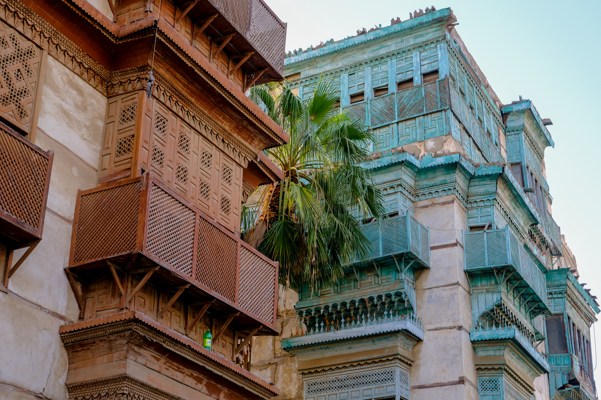
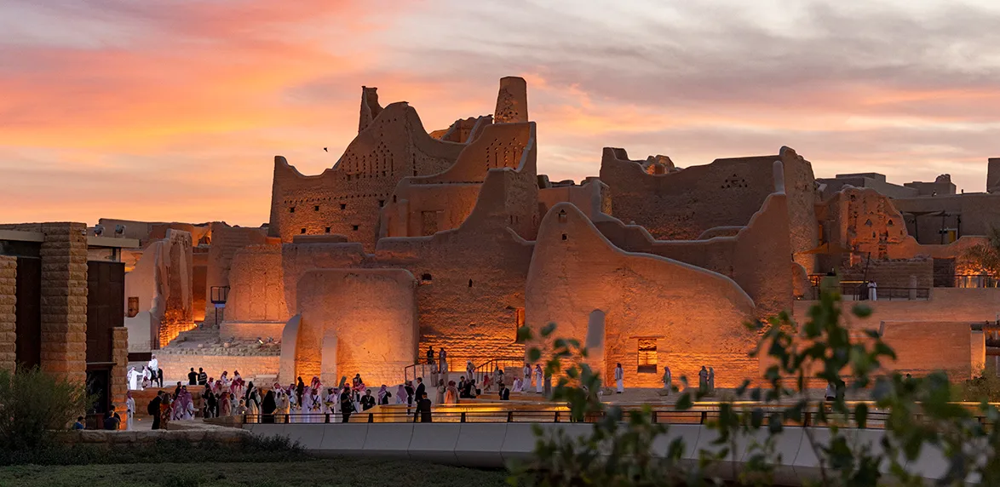
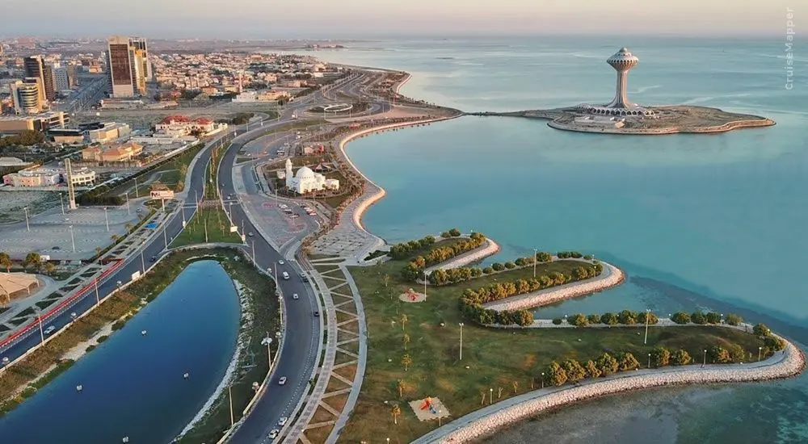
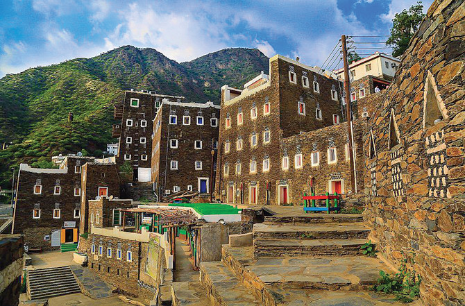
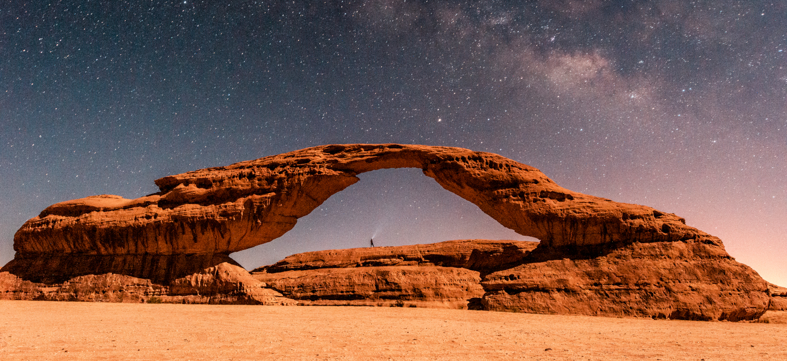

Prince Khaled Al-Faisal
Poet & Governor of Makkah Region
أنا من هالأرض… أرض الخير
أرض أجدادي… وتراثي… لي فيها جذور ما تموت
AN INTERACTIVE WEBSITE THAT HIGHLIGHTS SAUDI CULTURE
START YOUR JOURNEY NOW....
“Mawrooth” is a digital cultural platform designed to highlight the richness of Saudi heritage— from history and traditions to food, arts, and cultural events. Our goal is to present authentic, accessible, and enjoyable content that helps visitors understand the essence of Saudi identity through a modern, engaging experience.
Poet & Governor of Makkah Region
أنا من هالأرض… أرض الخير
أرض أجدادي… وتراثي… لي فيها جذور ما تموت

Renowned Saudi Poet, Minister & Diplomat
يا وطناً شامخاً تسمو المآثرُ فيه
ما زلتَ في مهجتي عشقاً أُرتِّلهُ

Saudi Poet & Writer
السعودية… يا دارٍ لنا
فيك المحبة… والأمان… والعز والسلاطين
Explore the five main regions of Saudi Arabia and discover the cultural landmarks and unique heritage of each area.

Home to the Two Holy Mosques, known for its historic souks, Hijazi folklore, and the unique architecture of Old Jeddah.

The heart of the Kingdom, featuring Diriyah and Al-Masmak Fort, traditional Najdi attire, and the famous Saudi Ardah folk dance.

A coastal region rich in traditional markets, seafood cuisine, and heritage related to ancient maritime crafts.

Known for its mountains, traditional villages like Rijal Almaa, colorful cultural attire, and the famous southern “Khutwah” dance.

Famous for the traditional “Dahha” dance, Bedouin heritage, vast desert landscapes, and ancient rock inscriptions.
Explore the most prominent cultural events across the Kingdom of Saudi Arabia.